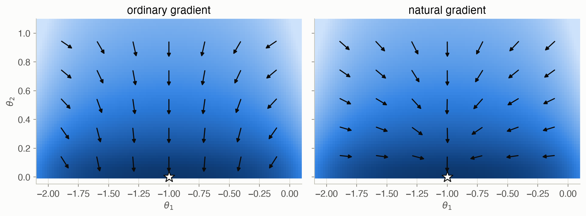

12 · Policy Gradient Optimization
Part II — Sequential Problems
Big picture
Where this chapter fits
Chapter 11 estimated the policy gradient: which way is uphill. This chapter decides how to step: how far, and in exactly which direction. The question sounds minor, but it’s where policy gradient methods succeed or fail. Too small a step wastes simulations. Too large a step lands on a much worse policy, sometimes so much worse that learning never recovers. The methods here, the natural gradient, TRPO and PPO, are the backbone of modern deep reinforcement learning. PPO in particular is one of the most widely used algorithms in practice, including for fine-tuning large language models with human feedback. Chapter 13 completes the picture by learning a value function to supply better advantages.
The question: given a noisy estimate of the uphill direction, how should you change the policy’s parameters so that it reliably gets better?
The short answer: limit each step by how much it changes the policy’s behavior, not by how far the parameters move. Measure that change with the KL divergence between the old and new policies, take the best step within that limit (the natural gradient), check it against an estimate of the new policy’s value (TRPO), or build the limit into the objective itself (PPO).
The key ideas at a glance
Gradient ascent needs a good step size, and there isn’t one. The update \(\theta \leftarrow \theta + \alpha \nabla U\) moves the parameters by \(\alpha\) times the gradient’s length. Far from the optimum, gradients can be huge, and a fixed \(\alpha\) overshoots. Near it they’re tiny, and the same \(\alpha\) crawls. Noise in the estimate makes it worse.
Cap the step. Gradient scaling shrinks the gradient to at most a set length, keeping its direction. Gradient clipping clamps each component separately, which can change the direction. A restricted step always moves exactly a fixed distance along the gradient: it’s the best step within a ball, for a linear model of \(U\).
Measure steps in behavior, not parameters. A small change in one parameter can change what the policy does a lot, and a large change in another can barely matter. The natural gradient limits the KL divergence between the trajectory distributions of the old and new policies. Its second-order approximation uses the Fisher information matrix, which turns the ball into an ellipse. The resulting direction \(F^{-1}\nabla U\) doesn’t depend on how the parameters are scaled.
Trust region (TRPO): take the natural step, then check it. A surrogate objective estimates how good the new policy would be, reusing the old trajectories reweighted by importance sampling. A line search shrinks the natural step until the surrogate improves and a KL constraint holds, without any new simulation.
Clamped surrogate (PPO): build the limit into the objective. Clip the probability ratio between the new and old policies to \([1 - \epsilon, 1 + \epsilon]\), and take the minimum with the unclipped objective. Moving the policy further than that brings no extra reward, so you can take several plain gradient steps on the same batch of data safely, with no Fisher matrix and no line search.
Vocabulary
| Term | Plain meaning |
|---|---|
| Step factor \(\alpha\) | Multiplier on the gradient in gradient ascent |
| Gradient scaling, clipping | Cap the gradient’s length; clamp each component |
| Restricted step | Move a fixed distance \(\sqrt{2\epsilon}\) along the gradient |
| KL divergence \(D_{\text{KL}}(p \,\Vert\, q)\) | A measure of how different two probability distributions are |
| Fisher information matrix \(F_\theta\) | Average outer product of scores; locally, KL \(\approx \frac12 \Delta\theta^\top F \Delta\theta\) |
| Natural gradient | \(F^{-1}\nabla U\): the steepest ascent direction when distance is measured by KL |
| Importance sampling | Reweighting samples from one distribution to estimate averages under another |
| Surrogate objective | An estimate of the new policy’s value from the old policy’s trajectories |
| Trust region (TRPO) | Accept a step only if the surrogate improves and the KL stays small |
| Probability ratio | \(\pi_{\theta'}(a \mid s)/\pi_\theta(a \mid s)\): how much more likely the new policy makes an old action |
| Clamped surrogate (PPO) | Surrogate with the probability ratio clipped to \([1-\epsilon, 1+\epsilon]\) |
After this chapter you can
- Explain why a fixed step factor fails, and use scaling, clipping and restricted steps.
- Compute a natural gradient step from a gradient and a Fisher matrix, and explain why it is scale-invariant.
- Estimate a new policy’s value from old trajectories with importance sampling, and run a trust-region line search.
- Compute PPO’s clamped objective, and say when a sample stops contributing to its gradient.
- Choose an update rule, and diagnose divergence, slowness and noise.
Intuition
TipAnalogy
You’re adjusting a recipe based on noisy tasting notes.
- Plain gradient ascent: “tasters say more salt, so add a lot more salt.” Too big a change can ruin the dish.
- Capping the step: never change more than a pinch at a time.
- The natural gradient recognizes that a pinch of salt changes the dish far more than a pinch of flour. So it limits how much the taste changes, not how many grams move.
- TRPO: propose a change, then before committing, check against past tasting notes whether it should be better. Scale it back if not.
- PPO: decide in advance that you’ll only trust the notes for modest changes, and optimize within that range.
We continue with the simple regulator (keep \(s\) near 0; policy \(a \sim \mathcal{N}(\theta_1 s, \theta_2^2)\)). Every run starts at \(\theta = (0, 1)\), a bad policy whose exact value is -24.6. The optimum is \(\theta = (-1, 0)\), worth -0.155. To compare only the update rules, every run uses the same gradient estimate (reward-to-go with a baseline, from Chapter 11) and 10 rollouts per update.
The step size dilemma
At the start, the gradient is about 130 long, because the policy is far from good. With \(\alpha = 0.01\), the first step moves the parameters about 1.3, past the optimum. Most runs recover (15 of 20 end within 0.05 of the optimum), but 1 of 20 blow up: the parameters leave any sensible range and never come back. With \(\alpha = 0.003\) nothing blows up, but progress is slow: the median value after 30 updates is -0.69. Neither is a good compromise, and the right \(\alpha\) depends on where you are. See Equation 1.
Cap the step
Scaling the gradient to length at most 1 and stepping \(\alpha = 0.2\) means no step is ever longer than 0.2. Nothing blows up, and the median after 30 updates is -0.18. But the steps stay 0.2 long even near the optimum, so the policy keeps jittering around it. Only 65% of runs end within 0.05 of the optimal value. See Equation 2.
Measure steps by behavior
Changing the gain \(\theta_1\) by 0.1 changes every action the policy takes. Changing the noise level \(\theta_2\) by 0.1 when it’s already 1 barely matters, but when it’s 0.1 it halves or doubles the policy’s randomness. The natural gradient limits the change in behavior (the KL divergence between trajectory distributions). So its steps grow where the policy is insensitive and shrink where it’s sensitive. With the same noisy gradients, 100% of runs end within 0.05 of the optimum (Figure 4). See Equation 4.
Reuse old trajectories: TRPO and PPO
To judge a proposed policy without new simulations, reweight the old ones. If the new policy makes an action twice as likely, that sample counts twice. That’s the surrogate objective. TRPO shrinks the natural step until the surrogate improves. PPO instead clips the reweighting at \(1 \pm 0.2\), so it gains nothing by pushing the policy further, and it takes 10 gradient steps on each batch. With a step factor of 0.05, 100% of PPO runs end within 0.05 of the optimum. With 0.1, 25% blow up: clipping limits how far each sample pushes, but not how big each gradient step is. See Equation 5 and Equation 7.
Formalism
Gradient ascent, scaling and clipping
The basic iterated ascent step (ADM §12.1):
\[ \theta \leftarrow \theta + \alpha\, \nabla U(\theta) \tag{1}\]
In words. Step uphill, a distance proportional to the slope.
Term by term.
- \(\alpha > 0\) is the step factor, so the step length is \(\alpha \lVert \nabla U \rVert\).
- Scaling replaces \(\nabla U\) by \(\min(1, L/\lVert\nabla U\rVert)\,\nabla U\), which caps the length at \(L\) and keeps the direction.
- Clipping clamps each component to \([a, b]\). If one component dominates, clipping lets the others count relatively more, while scaling shrinks them along with it.
- Decaying \(\alpha\) over time helps convergence to a local optimum.
The restricted step
Maximize a linear model of \(U\) within a ball around \(\theta\) (ADM §12.2):
\[ \max_{\theta'}\ \nabla U(\theta)^\top (\theta' - \theta) \quad \text{s.t.} \quad \tfrac12 \lVert \theta' - \theta \rVert^2 \le \epsilon \qquad \Longrightarrow \qquad \theta' = \theta + \sqrt{2\epsilon}\, \frac{\nabla U(\theta)}{\lVert \nabla U(\theta) \rVert} \tag{2}\]
In words. Among all steps of length at most \(\sqrt{2\epsilon}\), the one that best increases a linear model points straight along the gradient, and uses the full length.
Term by term. \(\epsilon\) sets the radius. Only the gradient’s direction matters, not its length.
Why it holds. A linear objective is maximized on the boundary of the ball. On a circle of radius \(r\), the dot product \(g^\top \Delta\) is largest when \(\Delta\) is parallel to \(g\) (Cauchy–Schwarz), so \(\Delta = r\, g/\lVert g \rVert\) with \(r = \sqrt{2\epsilon}\).
The natural gradient
Constrain the change in the trajectory distribution instead (ADM §12.3; S. Amari, Neural Computation, 1998; S. Kakade, NIPS, 2001). The KL divergence between nearby distributions is approximately quadratic:
\[ D_{\text{KL}}\big(p(\cdot \mid \theta)\,\Vert\,p(\cdot \mid \theta')\big) \approx \tfrac12 (\theta' - \theta)^\top F_\theta\, (\theta' - \theta), \qquad F_\theta = \mathbb{E}_\tau\big[\nabla \log p(\tau \mid \theta)\, \nabla \log p(\tau \mid \theta)^\top\big] \tag{3}\]
In words. For small steps, how different the new policy’s trajectories are is a quadratic form in the step. The Fisher matrix says which directions change the behavior most.
Term by term. \(\nabla \log p(\tau \mid \theta) = \sum_k \nabla \log \pi_\theta(a^{(k)} \mid s^{(k)})\) is the trajectory’s score (Chapter 11). \(F_\theta\) is estimated by averaging the outer products of the scores over the sampled trajectories.
Why it holds. Expand \(D_{\text{KL}}\) in a Taylor series around \(\theta' = \theta\). The value and the first derivative are zero (a distribution is closest to itself). The second derivative is the expected outer product of scores. Replacing the ball in Equation 2 by this ellipse gives:
\[ \theta' = \theta + \sqrt{\frac{2\epsilon}{\nabla U(\theta)^\top u}}\ u, \qquad u = F_\theta^{-1}\, \nabla U(\theta) \tag{4}\]
In words. Step along \(F^{-1}\nabla U\), as far as the KL budget \(\epsilon\) allows.
Term by term.
- \(u\) is the natural gradient. It stretches the step along directions that barely change behavior and shrinks it along sensitive ones.
- The square root scales the step so that \(\tfrac12 \Delta\theta^\top F \Delta\theta = \epsilon\) exactly.
- If the parameters are rescaled, \(\phi = D\theta\), then \(\nabla_\phi U = D^{-1}\nabla_\theta U\) and \(F_\phi = D^{-1}F_\theta D^{-1}\). The step in \(\theta\) comes out identical: the natural gradient is invariant to parameterization.
- For many parameters, \(u\) is computed by conjugate gradient without forming \(F^{-1}\).
Trust region policy optimization
TRPO (ADM §12.4; J. Schulman et al., ICML, 2015) starts from the natural step and line-searches back toward \(\theta\), using two estimates built from the old trajectories. The value of a new policy can be written with the old policy’s advantage, and importance sampling lets the old actions stand in for the new ones:
\[ f(\theta, \theta') = \mathop{\mathbb{E}}_{s \sim b_{\gamma,\theta}}\ \mathop{\mathbb{E}}_{a \sim \pi_\theta(\cdot \mid s)}\left[\frac{\pi_{\theta'}(a \mid s)}{\pi_\theta(a \mid s)}\, A_\theta(s, a)\right] \tag{5}\]
In words. How good would the new policy’s actions be, judged by the advantages seen under the old policy? Each old sample is reweighted by how much more (or less) likely the new policy makes its action.
Term by term.
- \(b_{\gamma,\theta}\) is the discounted state-visitation distribution of the old policy.
- The ratio \(\pi_{\theta'}/\pi_\theta\) is the importance weight.
- \(A_\theta\) is estimated from the data. The book uses the reward-to-go (an estimate of \(Q_\theta\)), which only shifts \(f\) by a constant. This page subtracts the average reward-to-go at each step, a simple baseline that reduces noise.
- The estimate averages over all steps of all trajectories, so it is roughly \(1/d\) of the change in \(U\). Only its sign and shape matter.
Why it holds. \(U(\theta') = U(\theta) + \mathbb{E}_{\tau \sim \pi_{\theta'}}\big[\sum_k \gamma^{k-1} A_\theta(s^{(k)}, a^{(k)})\big]\) exactly (S. Kakade and J. Langford, ICML, 2002). Importance sampling swaps the actions’ distribution for the old one. Swapping the state distribution too is the approximation, and it’s accurate only near \(\theta\). That’s why the step must stay in a trust region.
The line search accepts \(\theta'\) once \(f(\theta, \theta') > f(\theta, \theta)\) and
\[ g(\theta, \theta') = \mathop{\mathbb{E}}_{s \sim b_{\gamma,\theta}}\Big[D_{\text{KL}}\big(\pi_\theta(\cdot \mid s)\,\Vert\,\pi_{\theta'}(\cdot \mid s)\big)\Big] \le \epsilon, \tag{6}\]
otherwise it halves the step, \(\theta' \leftarrow \theta + \tfrac12(\theta' - \theta)\).
In words. Keep the step only if it’s predicted to help and doesn’t change the action distributions too much at the states visited.
Term by term. For the Gaussian policies here, the KL has a closed form: \(\log\frac{\sigma'}{\sigma} + \frac{\sigma^2 + (\mu - \mu')^2}{2\sigma'^2} - \frac12\). This constraint is an average per step, while the natural step’s Fisher matrix is for whole trajectories. So at the natural step, \(g\) is roughly \(\epsilon/d\), and the constraint rarely binds. On this problem, TRPO’s line search mostly acts as a check that the surrogate improves.
Clamped surrogate (PPO)
Proximal policy optimization (ADM §12.5; J. Schulman et al., 2017) replaces the constraint with a pessimistic objective:
\[ \mathbb{E}\left[\min\Big(w\, A_\theta(s, a),\ \operatorname{clamp}(w, 1 - \epsilon, 1 + \epsilon)\, A_\theta(s, a)\Big)\right], \qquad w = \frac{\pi_{\theta'}(a \mid s)}{\pi_\theta(a \mid s)} \tag{7}\]
In words. Credit the new policy for making good actions more likely (or bad ones less likely), but only up to a ratio of \(1 \pm \epsilon\). Beyond that, the objective stops rewarding further change, while still penalizing changes that make things worse.
Term by term.
- \(\epsilon\), typically 0.2, is how far the probability ratio may move.
- A sample’s gradient is zero once it’s clamped: \(A > 0\) and \(w > 1 + \epsilon\), or \(A < 0\) and \(w < 1 - \epsilon\).
- The minimum makes the objective a lower bound on the unclipped surrogate. Clipping alone would not.
- Several plain gradient steps are taken on the same batch. There’s no Fisher matrix and no line search, so it’s cheap and simple, but the step factor still matters.
Worked example
Scaling versus clipping
A gradient estimate \(g = (3, 0.5)\), capped at length 1 or clipped to \(\pm 1\):
| step | length | direction | |
|---|---|---|---|
| original | \((3, 0.5)\) | 3.04 | 9.5° above the \(\theta_1\) axis |
| scaled to length 1 | \((0.986, 0.164)\) | 1.00 | 9.5° (unchanged) |
| clipped to \(\pm 1\) | \((1, 0.5)\) | 1.12 | 26.6° (rotated) |
Restricted versus natural step
Gradient \(g = (2, 1)\), Fisher matrix \(F = \operatorname{diag}(4, 0.5)\), budget \(\epsilon = 0.1\):
- Restricted (Equation 2): \(\lVert g \rVert = \sqrt 5\), so the step is \(g\sqrt{0.2/5} = (0.4, 0.2)\). Check: \(\tfrac12(0.16 + 0.04) = 0.1\).
- Natural (Equation 4): \(u = F^{-1} g = (0.5, 2)\), \(g^\top u = 3\), so the step is \(u\sqrt{0.2/3} = (0.129, 0.516)\). Check: \(\tfrac12(4 \times 0.0167 + 0.5 \times 0.267) = 0.1\).
The natural step moves only a third as far along \(\theta_1\), the sensitive direction (\(F_{11} = 4\)), and more than twice as far along \(\theta_2\), where behavior changes little.
A KL divergence and an importance weight by hand
At state \(s = 0.5\), the old policy \(\theta = (-0.5, 0.5)\) acts with \(\mathcal{N}(-0.25, 0.5^2)\) and the new one \(\theta' = (-0.6, 0.4)\) with \(\mathcal{N}(-0.30, 0.4^2)\).
- The KL divergence: \(\log\frac{0.4}{0.5} + \frac{0.25 + 0.05^2}{2 \times 0.16} - \frac12 = -0.223 + 0.789 - 0.5 =\) 0.066.
- An importance weight: if the old policy took \(a = -0.3\), the new policy makes it \(w =\) 1.26 times as likely. In the surrogate, that sample counts 1.26 times.
- PPO: with \(\epsilon = 0.2\), the sample’s ratio 1.26 is beyond \(1 + \epsilon = 1.2\). So if its advantage is positive, it no longer pushes the policy further.
Interactive
Compare update rules
Pick an update rule, its step parameter and a random seed. The path starts at \(\theta = (0, 1)\) and makes 30 updates, each from 10 fresh rollouts, with the same gradient estimator for every rule. The right panel shows the exact value after each update. Try plain gradient ascent with the large step factor on seed 18, and PPO with its large step factor on seed 0: both blow up. Clipping blows up on every seed at its large setting. Then try the natural gradient: it reaches the optimum at every setting.
PPO’s clipped objective
For one sample, PPO’s objective as a function of the probability ratio \(w\). Set the clipping range \(\epsilon\) and the advantage \(A\). The dashed line is the unclipped \(wA\), and the solid orange line is PPO’s objective. Where it’s flat, the sample’s gradient is zero.
Algorithms & code
Capped steps
def scale_gradient(g: Array, max_norm: float) -> Array:
"""Shrink g to length max_norm if it is longer; keeps its direction."""
norm = np.linalg.norm(g)
return g * min(max_norm / norm, 1.0) if norm > 0 else g
def clip_gradient(g: Array, lo: float, hi: float) -> Array:
"""Clamp each component of g to [lo, hi]; can change its direction."""
return np.clip(g, lo, hi)
def restricted_step(theta: Array, grad: Array, eps: float) -> Array:
"""Best step within the ball (1/2)||step||^2 <= eps for a linear model
of U with this gradient: move a distance sqrt(2 eps) along it."""
return theta + grad * np.sqrt(2 * eps / (grad @ grad))using ADM, LinearAlgebra, Random, Statistics
scale_gradient(g, max_norm) = min(max_norm / norm(g), 1.0) .* g # keep the direction
clip_gradient(g, lo, hi) = clamp.(g, lo, hi) # componentwise
restricted_step(θ, g, ϵ) = θ .+ g .* sqrt(2ϵ / (g ⋅ g)) # fixed length √(2ϵ)
@assert scale_gradient([3.0, 0.5], 1.0) ≈ [3.0, 0.5] ./ norm([3.0, 0.5])
@assert clip_gradient([3.0, 0.5], -1, 1) == [1.0, 0.5]
@assert restricted_step([0.0, 0.0], [2.0, 1.0], 0.1) ≈ [0.4, 0.2]Natural gradient
def fisher_information(theta, S, A, grad_logp) -> Array:
"""F = E[grad log p(tau) grad log p(tau)^T], where grad log p(tau) is
the sum of the policy's scores along trajectory tau (one per row)."""
scores = grad_logp(theta, S, A).sum(axis=1) # (m, n)
return scores.T @ scores / len(scores)
def natural_step(theta: Array, grad: Array, F: Array, eps: float) -> Array:
"""Best step within the ellipse (1/2) step^T F step <= eps: move along
u = F^-1 grad, scaled so the constraint holds with equality."""
# A tiny ridge keeps the solve stable when few trajectories make F
# nearly singular.
u = np.linalg.solve(F + 1e-8 * np.eye(len(F)), grad)
return theta + u * np.sqrt(2 * eps / (grad @ u))# The regulator's policy a ~ N(θ₁ s, sd²), sd = |θ₂| + 1e-5: log density, score, KL.
sd(θ) = abs(θ[2]) + 1e-5
logπ(θ, s, a) = -0.5 * ((a - θ[1] * s) / sd(θ))^2 - log(sd(θ)) - 0.5 * log(2π)
function score(θ, s, a)
z = a - θ[1] * s
return [z * s / sd(θ)^2, (z^2 - sd(θ)^2) / sd(θ)^3 * sign(θ[2])]
end
kl(θ, θ′, s) = log(sd(θ′) / sd(θ)) + (sd(θ)^2 + ((θ[1] - θ′[1]) * s)^2) / (2sd(θ′)^2) - 0.5
# m episodes of 10 steps as m × d matrices of states, actions, rewards.
function sample(θ, m, rng; d = REGULATOR_HORIZON)
S, A, R = zeros(m, d), zeros(m, d), zeros(m, d)
for i in 1:m
s = REGULATOR_START[1] + REGULATOR_START[2] * randn(rng)
for k in 1:d
a = regulator_policy(θ, s, rng)
S[i, k], A[i, k] = s, a
s, R[i, k] = regulator_step(s, a, rng)
end
end
return S, A, R
end
# Fisher matrix: average outer product of the trajectory scores.
function fisher(θ, S, A)
scores = [sum(score(θ, S[i, k], A[i, k]) for k in axes(S, 2)) for i in axes(S, 1)]
return sum(g * g' for g in scores) / length(scores)
end
# Step along F⁻¹ ∇U until ½ Δᵀ F Δ = ϵ.
function natural_step(θ, g, F, ϵ)
u = (F + 1e-8I) \ g
return θ .+ u .* sqrt(2ϵ / (g ⋅ u))
endTrust region and clamped surrogate
def discounted_rewards_to_go(R: Array, gamma: float) -> Array:
"""gamma^(k-1) times the reward-to-go at step k: an estimate of the
action value Q, weighted by the discounted visitation of step k."""
return gamma ** np.arange(R.shape[1]) * rewards_to_go(R, gamma)
def advantage_estimates(R: Array, gamma: float) -> Array:
"""Discounted reward-to-go minus its average over the trajectories at
the same step: a simple estimate of the advantage A = Q - U."""
q = discounted_rewards_to_go(R, gamma)
return q - q.mean(axis=0, keepdims=True)
def surrogate_objective(theta, theta2, S, A, weights, logp) -> float:
"""Estimate of U(theta2) - const from trajectories sampled with theta:
importance weights pi_theta2 / pi_theta times each step's credit."""
w = np.exp(logp(theta2, S, A) - logp(theta, S, A))
return float((w * weights).mean())
def surrogate_constraint(theta, theta2, S, gamma, kl) -> float:
"""Average discounted KL divergence between the old and new policies
at the visited states."""
discount = gamma ** np.arange(S.shape[1])
return float((discount * kl(theta, theta2, S)).mean())
def trust_region_update(theta, grad, S, A, weights, gamma, logp, grad_logp,
kl, eps: float, shrink: float = 0.5,
max_halvings: int = 30) -> Array:
"""TRPO: take the natural gradient step, then shrink it toward theta
until the surrogate objective improves and the KL constraint holds.
Everything reuses the same trajectories."""
F = fisher_information(theta, S, A, grad_logp)
candidate = natural_step(theta, grad, F, eps)
f0 = surrogate_objective(theta, theta, S, A, weights, logp)
for _ in range(max_halvings):
f = surrogate_objective(theta, candidate, S, A, weights, logp)
g = surrogate_constraint(theta, candidate, S, gamma, kl)
if g <= eps and f > f0:
return candidate
candidate = theta + shrink * (candidate - theta)
return theta # no acceptable step found: stay put
def clamped_objective(theta, theta2, S, A, weights, logp,
eps: float) -> float:
"""PPO's pessimistic surrogate: at each step, the smaller of w * credit
and clamp(w, 1 - eps, 1 + eps) * credit, where w is the probability
ratio pi_theta2 / pi_theta."""
w = np.exp(logp(theta2, S, A) - logp(theta, S, A))
return float(np.minimum(w * weights,
np.clip(w, 1 - eps, 1 + eps) * weights).mean())
def clamped_gradient(theta, theta2, S, A, weights, logp, grad_logp,
eps: float) -> Array:
"""Gradient at theta2 of PPO's clamped surrogate, from trajectories
sampled with theta. A step's contribution is w * grad log pi_theta2 *
credit, or zero once the probability ratio w has moved beyond 1 +- eps
in the direction the credit favors."""
w = np.exp(logp(theta2, S, A) - logp(theta, S, A))
clamped = (((weights > 0) & (w > 1 + eps))
| ((weights < 0) & (w < 1 - eps)))
per_step = np.where(clamped, 0.0, w * weights)
# w * grad log pi_theta2 = grad pi_theta2 / pi_theta (ADM eq. 12.23)
return (grad_logp(theta2, S, A) * per_step[..., None]).mean(axis=(0, 1))
def clamped_surrogate_update(theta, S, A, weights, logp, grad_logp,
eps: float, alpha: float,
k_max: int) -> Array:
"""PPO: several gradient steps on the clamped surrogate, all reusing
the same trajectories sampled with theta."""
theta2 = np.array(theta, dtype=float)
for _ in range(k_max):
theta2 = theta2 + alpha * clamped_gradient(
theta, theta2, S, A, weights, logp, grad_logp, eps)
return theta2γ = REGULATOR_γ
function rewards_to_go(R)
rtg, running = zero(R), zeros(size(R, 1))
for k in size(R, 2):-1:1
running = R[:, k] .+ γ .* running
rtg[:, k] = running
end
return rtg
end
discounted_q(R) = (γ .^ (0:size(R, 2)-1))' .* rewards_to_go(R)
advantages(R) = (q = discounted_q(R); q .- mean(q, dims = 1)) # minus the average at each step
# The Chapter 11 gradient: reward-to-go with the best constant baseline.
function baseline_gradient(θ, S, A, R)
q, disc = rewards_to_go(R), γ .^ (0:size(R, 2)-1)
ℓ = [disc[k] .* score(θ, S[i, k], A[i, k]) for i in axes(S, 1), k in axes(S, 2)]
base = sum(ℓ[j] .^ 2 .* q[j] for j in eachindex(ℓ)) ./ sum(ℓ[j] .^ 2 for j in eachindex(ℓ))
return mean(sum(ℓ[i, k] .* (q[i, k] .- base) for k in axes(S, 2)) for i in axes(S, 1))
end
ratio(θ, θ′, S, A) = exp.(logπ.(Ref(θ′), S, A) .- logπ.(Ref(θ), S, A)) # importance weights
surrogate(θ, θ′, S, A, W) = mean(ratio(θ, θ′, S, A) .* W)
constraint(θ, θ′, S) = mean((γ .^ (0:size(S, 2)-1))' .* kl.(Ref(θ), Ref(θ′), S))
# TRPO: natural step, then halve toward θ until the surrogate improves and the KL constraint holds.
function trust_region_update(θ, S, A, R, ϵ)
W, cand = advantages(R), natural_step(θ, baseline_gradient(θ, S, A, R), fisher(θ, S, A), ϵ)
f0 = surrogate(θ, θ, S, A, W)
for _ in 1:30
(constraint(θ, cand, S) <= ϵ && surrogate(θ, cand, S, A, W) > f0) && return cand
cand = θ .+ 0.5 .* (cand .- θ)
end
return θ
end
# PPO: k plain steps on the clamped surrogate, reusing the same trajectories.
function ppo_update(θ, S, A, R, ϵ, α, k_max)
W, θ′ = advantages(R), copy(θ)
for _ in 1:k_max
w = ratio(θ, θ′, S, A)
g = zeros(2)
for j in eachindex(W)
clamped = (W[j] > 0 && w[j] > 1 + ϵ) || (W[j] < 0 && w[j] < 1 - ϵ)
clamped || (g .+= w[j] * W[j] .* score(θ′, S[j], A[j]))
end
θ′ = θ′ .+ α .* g ./ length(W)
end
return θ′
endRun them
rng = np.random.default_rng(5)
theta = np.array([0.0, 1.0])
for _ in range(30): # 30 natural gradient updates
S, A, R = sr.sample_trajectories(theta, 10, rng)
g = baseline_gradient(sr.grad_log_policy(theta, S, A), R, G)
F = fisher_information(theta, S, A, sr.grad_log_policy)
theta = natural_step(theta, g, F, 0.2)function optimize(update; iters = 30, seed = 1)
rng, θ = MersenneTwister(seed), [0.0, 1.0]
for _ in 1:iters
S, A, R = sample(θ, 10, rng)
θ = update(θ, S, A, R)
end
return θ
end
U_star = regulator_exact_value([-1.0, 0.0])
near(θ) = regulator_exact_value(θ) > U_star - 0.1
@assert near(optimize((θ, S, A, R) -> natural_step(θ, baseline_gradient(θ, S, A, R), fisher(θ, S, A), 0.2)))
@assert near(optimize((θ, S, A, R) -> trust_region_update(θ, S, A, R, 0.2)))
@assert near(optimize((θ, S, A, R) -> ppo_update(θ, S, A, R, 0.2, 0.05, 10)))after 30 natural gradient updates: theta = (-0.926, 0.053), exact value -0.171 (optimum -0.155)
NoteReading the Julia code (for Python programmers)
logπ.(Ref(θ′), S, A)broadcasts over the matricesSandAwhile treatingθ′as a single value (Refstops it from being broadcast), likenp.vectorizewith a fixed argument.(F + 1e-8I) \ gsolves \((F + 10^{-8} I)u = g\), likenp.linalg.solve.cond && return xreturns early whencondholds;cond || stmtrunsstmtonly whencondis false.(q = ...; expr)evaluates in sequence and returns the last value.mean(q, dims = 1)averages each column, keeping a 1-row matrix, likeq.mean(axis=0, keepdims=True).
Results
Every update rule
| Rule | Setting | Median U after 10 | Median U after 30 | Within 0.05 of optimum | Blew up |
|---|---|---|---|---|---|
| Gradient ascent | α = 0.003 | -2.551 | -0.690 | 0% | 0% |
| Scaled gradient | α = 0.2 | -0.233 | -0.183 | 65% | 0% |
| Clipped gradient | α = 0.2 | -0.388 | -0.197 | 55% | 0% |
| Restricted step | ε = 0.005 | -0.652 | -0.189 | 60% | 0% |
| Natural gradient | ε = 0.2 | -0.435 | -0.168 | 100% | 0% |
| Trust region (TRPO) | ε = 0.2 | -0.435 | -0.171 | 100% | 0% |
| Clamped surrogate (PPO) | α = 0.05 | -0.412 | -0.173 | 100% | 0% |
![Line chart with updates 0 to 30 across and minus the exact value on a log scale up the side, all curves starting at about 25. Plain gradient ascent falls slowly and ends near 0.7. The clipped and scaled curves fall fastest, reaching about 0.2 to 0.3 by updates 5 and 6, then zigzag between about 0.17 and 0.35 for the rest of the run. The restricted step falls more slowly at first, reaching about 0.2 by update 13, then also jitters. The natural gradient, TRPO (overlapping it) and PPO fall smoothly and settle close to the dotted optimum line near 0.155 by about update 20.](ch12-policy-gradient-optimization_files/figure-html/fig-learning-output-1.png)
The natural gradient points where you want to go

Averaged over these 35 points, the cosine between the step direction and the direction to the optimum is 0.88 for the ordinary gradient and 0.98 for the natural gradient. A cosine of 1 means pointing straight at the optimum.
How good is the surrogate?
![Two line charts sharing the step multiple t from minus 0.5 to 2.5 across. Left: the exact change in value over the horizon rises and gently bends but is still rising at 2.5; the surrogate rises almost exactly with it up to about 1.5 and then slightly above it; the clamped objective follows them only up to about 0.3, peaks near t equals 1.2, and falls. Right: the quadratic KL grows as a parabola and crosses the dashed epsilon line of 0.2 at t equals 1; the per-step KL grows much more slowly and stays below the dashed line throughout.](ch12-policy-gradient-optimization_files/figure-html/fig-surrogate-output-1.png)
Three things show here:
- The surrogate is a good local estimate. At the natural step (\(t = 1\)) it’s within 6% of the exact change in value (scaled by the horizon). By \(t = 2.5\), where the importance weights are larger, it’s +17% off. The exact value is still rising at t = 2.5: at this point the natural step with ε = 0.2 is cautious.
- PPO’s clamped objective is pessimistic by design. It peaks near \(t =\) 1.2, short of where the value keeps improving, so PPO’s steps stay small.
- At the natural step, the per-step KL is only 0.019, far below \(\epsilon = 0.2\). In the scorecard runs, TRPO’s line search rejected the full natural step in only 40 of the 600 updates (7%). The KL constraint was violated in 0 of those, and the surrogate failed to improve in 40. On this problem TRPO behaves almost exactly like the natural gradient.
Solved problems
Problem 1: one dominant component. A gradient estimate is \((100, 1)\). What do scaling to length 1 and clipping to \(\pm 1\) each give? When is each preferable?
TipSolution
- Scaling: \((100, 1)/\sqrt{10001} = (0.99995, 0.0100)\). The second component almost vanishes.
- Clipping: \((1, 1)\), which points at 45°.
If the large component is real signal, scaling keeps the right direction. If it’s a noisy outlier, or a parameter on a different scale, clipping stops it from dominating the update. Neither fixes the underlying problem of mismatched scales; the natural gradient does.
Problem 2: rescaling a parameter. The noise parameter is reparameterized as \(\phi_2 = 10\,\theta_2\). How do the ordinary gradient step and the natural step change?
TipSolution
With \(\phi = D\theta\) and \(D = \operatorname{diag}(1, 10)\), the chain rule gives \(\nabla_\phi U = D^{-1}\nabla_\theta U\): the second component shrinks tenfold. A plain gradient step in \(\phi\), mapped back to \(\theta\), becomes \(D^{-1}(\alpha D^{-1}\nabla_\theta U)\). That’s 100 times smaller along \(\theta_2\), so the direction changes. The Fisher matrix transforms as \(F_\phi = D^{-1}F_\theta D^{-1}\), so \(F_\phi^{-1}\nabla_\phi U = D F_\theta^{-1}\nabla_\theta U\). Mapped back, that’s \(F_\theta^{-1}\nabla_\theta U\), and the step length (set by the KL budget) is the same too. The natural step is unchanged.
Problem 3: importance weights by hand. Two old actions at the same state have advantages \(+1\) and \(-1\). A proposed policy makes the first 1.5 times as likely and the second 0.9 times as likely. What are the surrogate and PPO objectives (\(\epsilon = 0.2\)), averaged over the two samples?
TipSolution
- Surrogate: \(\tfrac12(1.5 \times 1 + 0.9 \times (-1)) = 0.30\).
- PPO, first sample: \(\min(1.5 \times 1,\ 1.2 \times 1) = 1.2\), clamped, so its gradient is zero.
- PPO, second sample: \(\min(0.9 \times (-1),\ \operatorname{clamp}(0.9, 0.8, 1.2) \times (-1)) = \min(-0.9, -0.9) = -0.9\).
- PPO average: \(\tfrac12(1.2 - 0.9) = 0.15\).
PPO’s objective is lower: it refuses to credit the first sample’s ratio beyond 1.2.
Problem 4: when is PPO’s gradient zero? List the four combinations of the advantage’s sign and the ratio’s position, and say which contribute to the gradient.
TipSolution
- \(A > 0,\ w > 1 + \epsilon\): clamped, no gradient. The policy already favors this good action enough.
- \(A > 0,\ w \le 1 + \epsilon\): contributes. It pushes to make the action more likely.
- \(A < 0,\ w < 1 - \epsilon\): clamped, no gradient. The policy already avoids this bad action enough.
- \(A < 0,\ w \ge 1 - \epsilon\): contributes. It pushes to make the action less likely, even if \(w > 1\): mistakes are always corrected.
Problem 5: a KL budget in actions. For the regulator’s Gaussian policy at a state \(s = 1\) with noise \(\sigma = 0.5\) held fixed, how far may the gain \(\theta_1\) change if the per-state KL must stay below 0.02?
TipSolution
With equal spreads, \(D_{\text{KL}} = (\Delta\mu)^2/(2\sigma^2)\), and \(\Delta\mu = \Delta\theta_1 \cdot s = \Delta\theta_1\). So \((\Delta\theta_1)^2 / 0.5 \le 0.02\), giving \(|\Delta\theta_1| \le 0.1\). With \(\sigma = 0.1\), the limit is 0.02: a less random policy is more sensitive, so the same KL budget allows smaller changes.
Recap
- Gradient ascent (Equation 1) has no good fixed step factor: big steps can diverge, small ones crawl. Why it matters: here \(\alpha = 0.01\) blew up 5% of runs, while \(\alpha = 0.003\) was still far from the optimum after 30 updates. With a neural network policy, one blow-up can end training.
- Scaling, clipping and restricted steps (Equation 2) bound each step. Why it matters: they prevent blow-ups cheaply, but a fixed length keeps jittering near the optimum.
- The natural gradient (Equation 3, Equation 4) limits the change in behavior, not in parameters. Why it matters: it is invariant to how parameters are scaled, points more directly at the optimum, and here reached the optimum in 100% of runs.
- TRPO checks natural steps against an importance-sampled surrogate within a KL trust region (Equation 5, Equation 6). Why it matters: it guards against bad steps without extra simulation. The surrogate is trustworthy only near the current policy.
- PPO clips the probability ratio (Equation 7), building the trust region into a simple objective. Why it matters: it needs no Fisher matrix or line search, which is why it’s one of the most widely used policy optimization methods, but its step factor still has to be tuned.
Cheat sheet & connections
| Name | Formula | Ref |
|---|---|---|
| Gradient ascent | \(\theta \leftarrow \theta + \alpha \nabla U\) | Equation 1 |
| Restricted step | \(\theta + \sqrt{2\epsilon}\, \nabla U / \lVert\nabla U\rVert\) | Equation 2 |
| Fisher information | \(F = \mathbb{E}[\nabla\log p\, \nabla\log p^\top]\); \(D_{\text{KL}} \approx \frac12 \Delta^\top F \Delta\) | Equation 3 |
| ★ Natural gradient | \(\theta + \sqrt{2\epsilon / \nabla U^\top u}\ u\), \(u = F^{-1}\nabla U\) | Equation 4 |
| Surrogate objective | \(\mathbb{E}\big[\frac{\pi_{\theta'}}{\pi_\theta} A_\theta\big]\) | Equation 5 |
| Trust region (TRPO) | accept if surrogate improves and \(\mathbb{E}_s[D_{\text{KL}}] \le \epsilon\); else halve | Equation 6 |
| ★ PPO clipped objective | \(\mathbb{E}[\min(wA, \operatorname{clamp}(w, 1\pm\epsilon)A)]\) | Equation 7 |
Common pitfalls
- A step factor tuned far from the optimum. Gradients shrink near it (or explode far from it). Prefer steps limited in length or in KL.
- Noisy gradients in a natural step. \(F^{-1}\) can amplify noise. Use the lower-variance estimators of Chapter 11. Here, the same natural and TRPO steps with the plain likelihood ratio gradient often failed.
- Trusting the surrogate far from the old policy. Importance weights explode, and the surrogate turns over-optimistic.
- Mismatched KL measures. A trajectory-level Fisher matrix and a per-step KL check differ by about the horizon, so a constraint may never bind.
- Too large a PPO step factor. Clipping limits each sample’s influence, not the step size. A large \(\alpha\) still diverges.
Connections
- Ch 11 · Policy Gradient Estimation: the gradient estimates used here.
- Ch 10 · Policy Search: natural-gradient steps for a search distribution (evolution strategies).
- Ch 13 · Actor-Critic Methods: a learned critic supplies the advantages for TRPO and PPO.
- Ch 3 · Inference: likelihood weighting is importance sampling.
- Appendix F · Simple regulator: the problem used here.
- Appendix A · Mathematical Concepts: entropy, cross entropy and the KL divergence behind the trust regions.